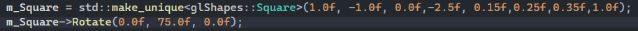
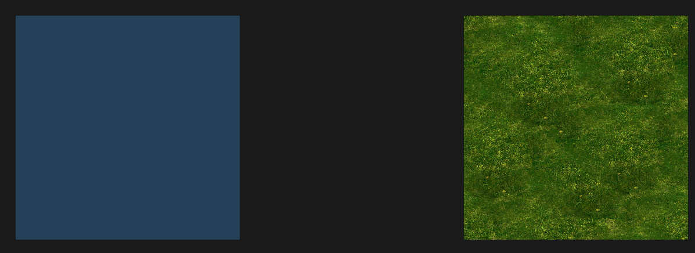
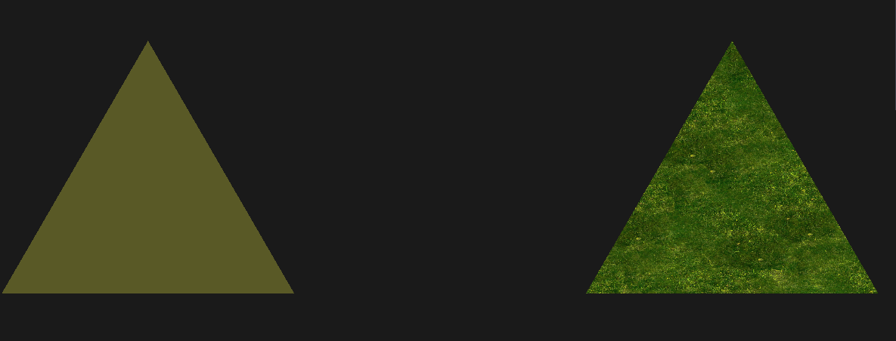

About
Library with classes that represent 2D and 3D Shapes.
Functions
- Rendering 2D and 3D models
- Rotation, Translation and Scaling
- Setting chosen color
- Texture mapping
Usage example:
2D shapes
Square, Triangle and Circle



3D shapes
Ball and Cube
Tetrahedron and Torus
Technologies
C++14, OpenGL 3.3, GLFW, GLEW, stb_image, glm